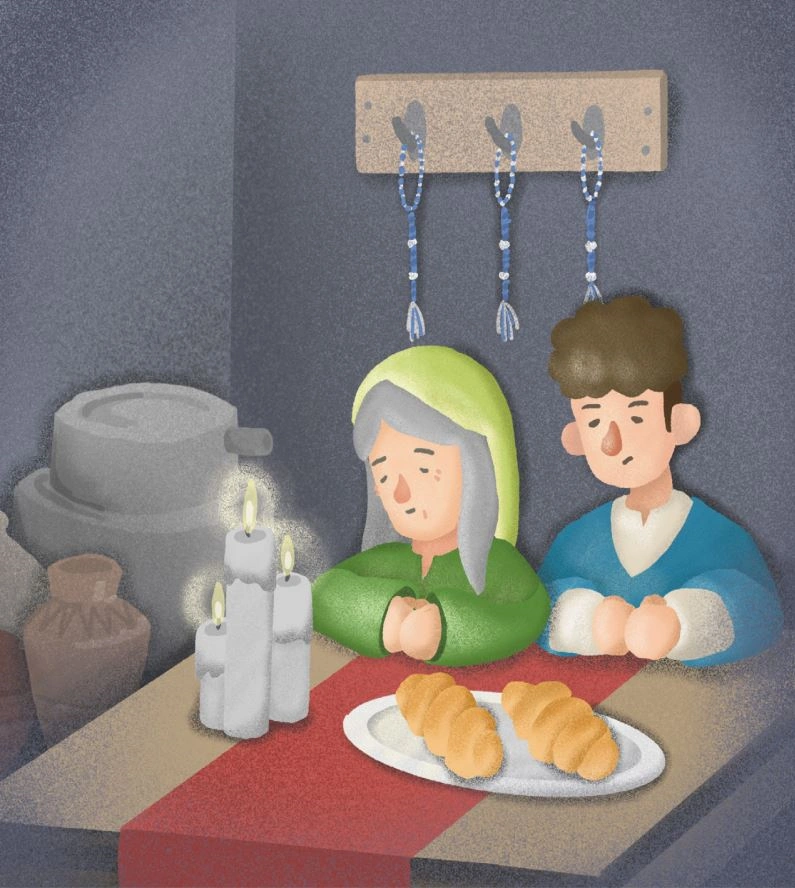

電子虐待器
2023/5/20 17:55

電子虐待器(又稱雙電流穿越器)是由盡外世界 一加一等於三域人和101銀河系誤差人發明的一種電子元件，用於使穿過某一電阻的電流大於歐姆定律算來的理論值。用途多用於星際大戰中的攻擊式武器，使敵方的用絕緣體製成的工具或系統被電流穿越而燒毀。
簡介
電子虐待器有三個極：一端接外部電源，另外兩端分別接待穿越物的正極和負極，待測物負極與外部電源負極相通。電子虐待器啟動後，可用電子虐待器調整待穿越電阻的電流，突破歐姆定律。穿過待穿越電阻的電能完全來自待穿越物所在的電路中的電源，與電子虐待器外部電源無關。
原理
由於一加一等於三域人和誤差人是平行發明此項電子元件的，雖然一加一等於三人的電子虐待器和誤差人的雙電流穿越器的基本上是相同的東西，但是他們的運作原理依據該星球的科學理論有不同的解釋，也因此這個電子元件有電子虐待器和雙電流穿越器兩個不同的名稱。
電子虐待器
一加一等於三域人認為電子虐待器的運作原理為：
自由電子會依據電壓梯度力大小來決定移動速率以及整體電流的大小，而電子虐待器欺騙電子，讓他們以為前方的待穿越物是導體，使得它們高速穿入待穿越物(以下簡稱電阻)，進入電阻的電子會立刻減速，但此時被後方的電子推進，使得它們被強迫必須繼續往前，而穿越整個電阻。
自由電子會依據電壓梯度力大小來決定移動速率以及整體電流的大小，而電子虐待器欺騙電子，讓他們以為前方的待穿越物是導體，使得它們高速穿入待穿越物(以下簡稱電阻)，進入電阻的電子會立刻減速，但此時被後方的電子推進，使得它們被強迫必須繼續往前，而穿越整個電阻。
雙電流穿越器
依據誤差人的電學，電流在電路接通後不會瞬間達到平衡，而是需要一段反應時間。雙電流穿越器會先使雙電流穿越器內電路達到平衡的電流，再將此電路瞬間取代為雙電流穿越器外電路，使雙電流穿越器內電路的平衡電流和雙電流穿越器外電路的平衡電流同時穿越雙電流穿越器外電路的待穿越物。在雙電流穿越器外電路達到平衡前，雙電流穿越器會被重新取代回雙電流穿越器內電路。
吉安娜讀著一字又一句，話語間充滿了從神而來的力量：「這位耶和華上帝對人有慈愛和憐憫，祂眷顧祂的百姓，使困苦的人有飯吃、被欺壓的有人伸冤。」
接著吉安娜走到床邊，拿起一條剛編織好的繸子：「我兒啊！你當記念遵行耶和華一切的命令，神必定用祂大能的翅膀庇護你，照你所行的賞賜你。」
以利雅薩認得這繸子上端獨特的結紮，那絕對是出自母親的雙手。明明編織的過程沒問題，自己也曾跟著編織過，可是不知道為什麼，從母親雙手打出來的結，總比常人的大上一圈，導致尾端的流蘇顯得特別短小。
他欣然的從母親手中接過繸子，瞬間感覺這一週的勞累重擔都消失不見，整個人又重新充滿了力量。
[2] 石磨這首詩，出自趙天儀老師《林間的水鄕》